open Cura, click on the black bar in the top right corner that says Ultimaker
select 'Add Printers'
in the popup, click on 'others'
scroll down the list until you see the 'Prusa i3 Mk2'
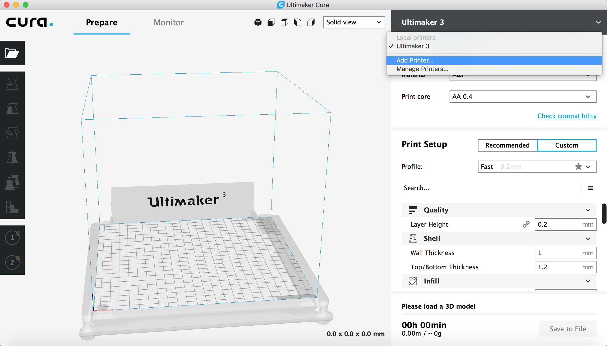
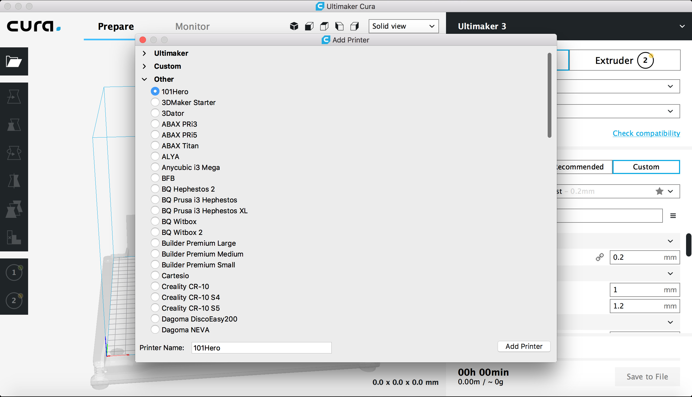
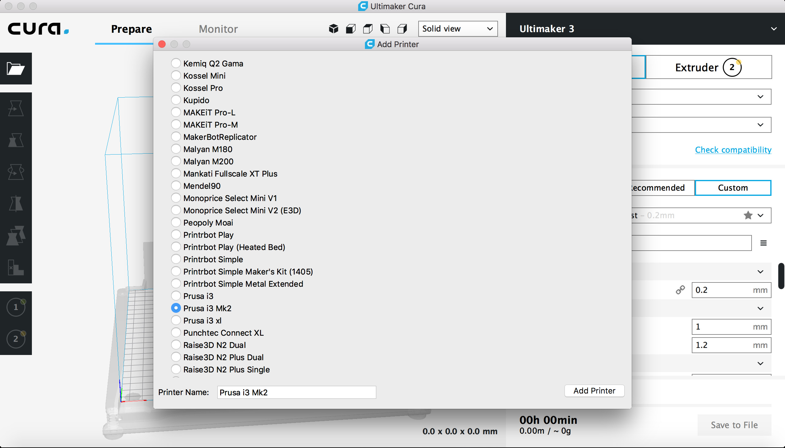
the black bar should now say 'Prusa i3 Mk2'
scroll down in the settings and set the Printing Temperature to 210C
scroll down and check that the print speed says 60mm/s and travel speed (print head moving but not extruding) is set to 120mm/s
finally, scroll down and change the support placement to say 'touching the build plate' (support will only be generate where you have a chance to actually break it off and not inside in small holes)
now load your 3D model into Cura (just drag the stl file onto the build plate), I used the Shroom.stl file
the red areas show you where support material will be generated eventually
switch from 'Solid View' to 'Layer View'
this will start the slicing process (takes a few minutes) and will show you the support material, the time it will take for printing etc.
you can use the 'move' and 'scale' functionality on the left side to position your model on the build plate (in case you want to print multiple things) and change the size of your model (in case you want to save time)
make sure the extruder is still preheated sufficiently (this should be the case if you just unloaded filament, but in case there was nothing loaded at the beginning you might have to do it now)
go to 'Load filament'
check that your filament has a clean end and then insert it
you should feel a slight pull from the extruder
if you look at the bottom of the extruder, you should see material coming out
if you change from, e.g. blue to yellow, there might still be a bit blue coming out before you see the yellow coming, confirm in the interface once you see your new color and you are all set
here's something that Stefanie did with custom gcode (first videom, called Wireprint, moves the print head up and down for faster printing, read more here if you are interested)
Gcode is also used for telling laser cutters what to do, the second video shows something that Stefanie did with custom gcode for laser cutters, called Destructive Games, read more here if you are interested
Other Settings
it might be worth to check out other settings too, such as moving the extruder around freely before loading filament, some pictures of more advanced settings below


 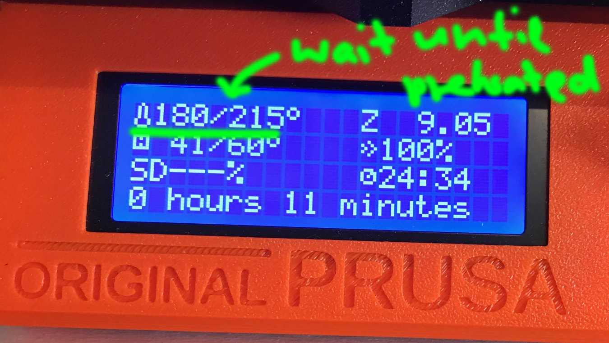
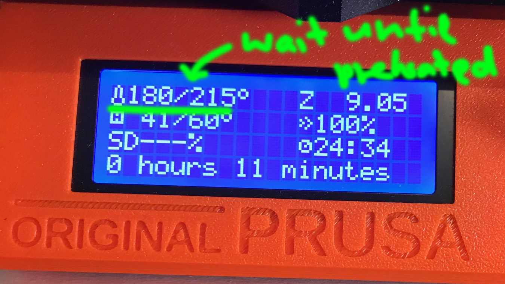


 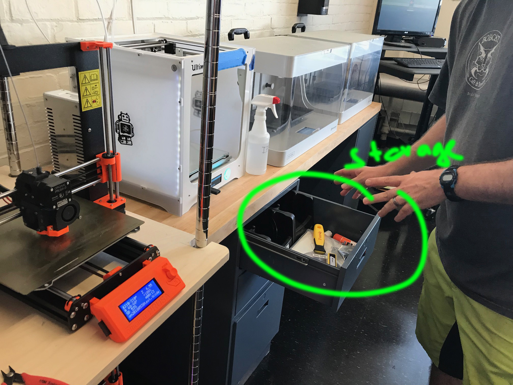
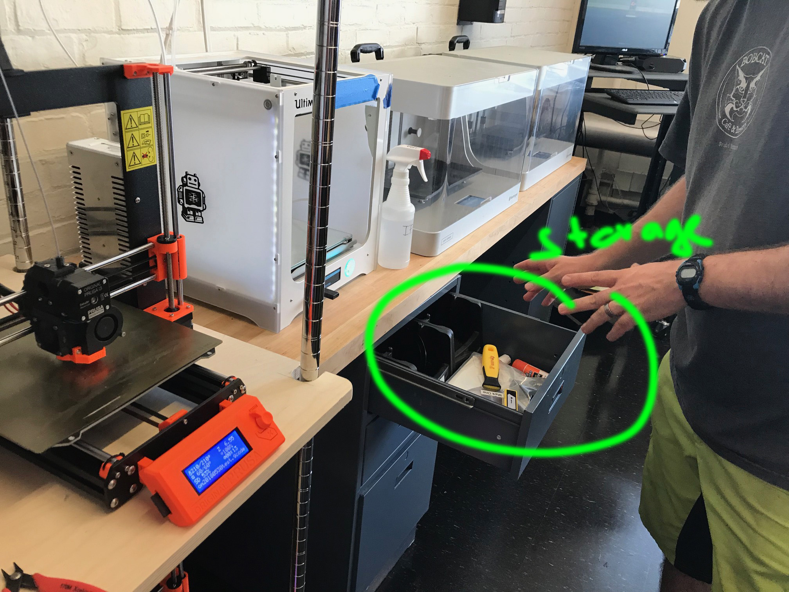

 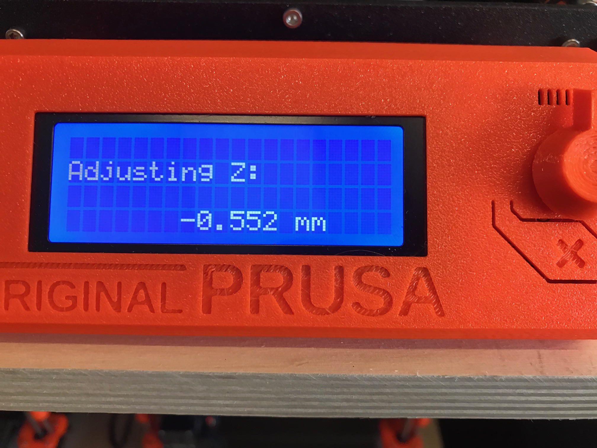
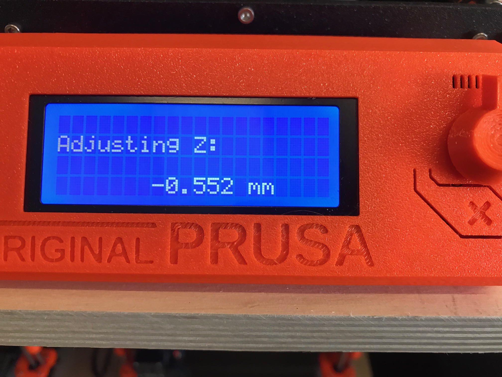
 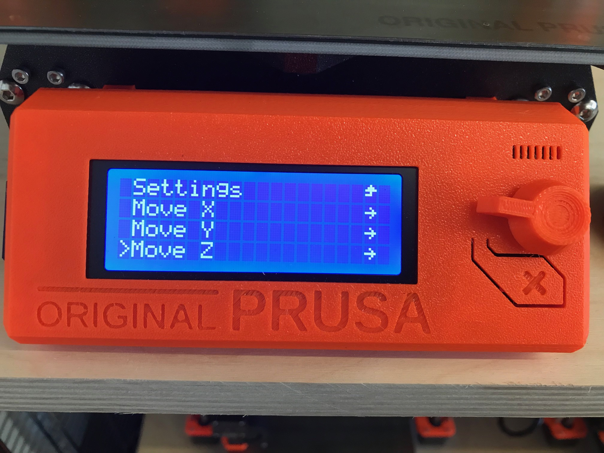
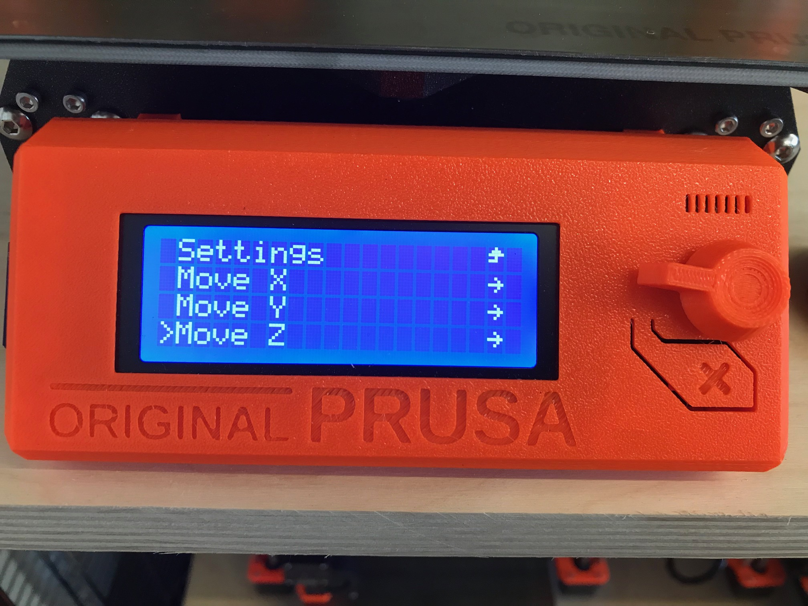
 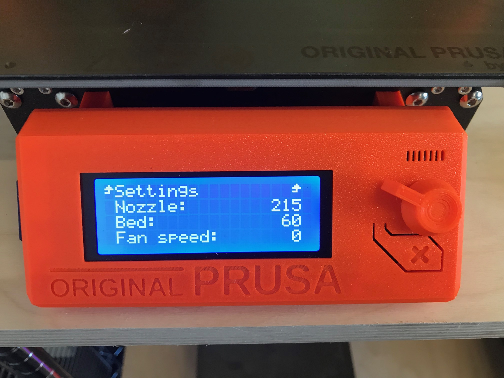
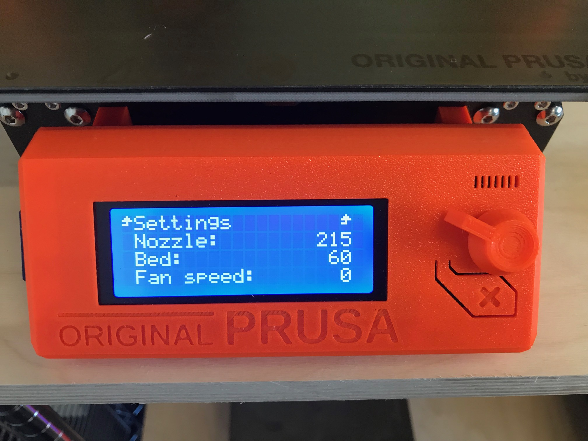